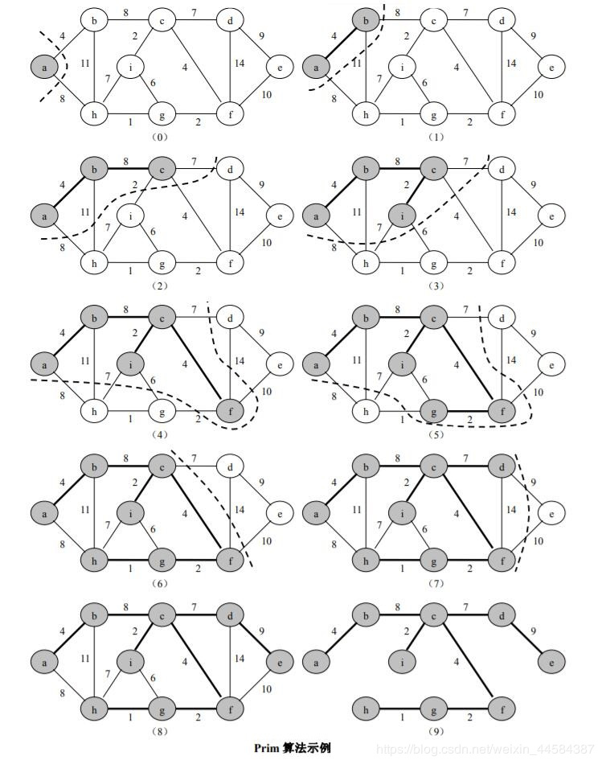
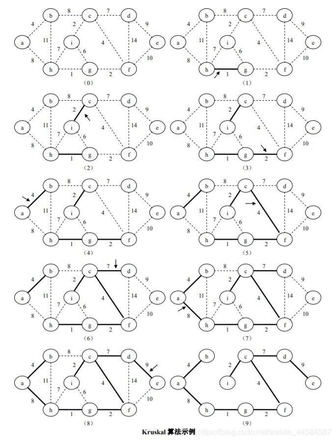

最短路径
对于网图来说，最短路径是指两顶点之间经过的边上权值之和最少的路径，并且称路径上的第一个顶点是源点，最后一个顶点是终点；
最短路经算法现在重要的应用有计算机网络路由算法，机器人探路，交通路线导航，人工智能，游戏设计等等。
Dijkstra算法
Dijkstra 算法是典型的单源最短路径算法，用于计算一个结点到其他所有结点的最短路径。主要特点是以起始点为中心向外层层扩展，直到扩展到终点为止。
算法思想：把图中顶点集合V分成两组，第一组为已求出最短路径的顶点集合（用S表示），第二组为其余未确定最短路径的顶点集合（用U表示），按最短路径长度的递增次序依次把第二组的顶点加入S中。
下图是从网上找到的比较好的Dijkstra算法图解例子(图中有一点错误，在后面进行了更正)。
以第4个顶点D为起点：

上图前几步B路径有误，应该是B(13)，也可以使用一个图表进行Dijkstra算法的图解，这是我个人觉得比较好用的一个办法：（∞代表不可达）
| D | A | B | C | E | F | G | |
|---|---|---|---|---|---|---|---|
| 初始值 | 0 | ∞ | ∞ | 3(最小） | 4 | ∞ | ∞ |
| 处理C | 0 | ∞ | 13 | 3 | 4(最小) | 9 | ∞ |
| 处理E | 0 | ∞ | 13 | 3 | 4 | 6(最小) | 12 |
| 处理F | 0 | 22 | 13 | 3 | 4 | 6 | 12(最小) |
| 处理G | 0 | 22 | 13(最小) | 3 | 4 | 6 | 12 |
| 处理B | 0 | 22(最小) | 13 | 3 | 4 | 6 | 12 |
| 处理A | 0 | 22 | 13 | 3 | 4 | 6 | 12 |
最终就可以求得点D到达各个点的最短路径距离了。
最小生成树(MST)
对于一个连通网（连通带权图）来说，生成树不同，每棵树的代价（树中每条边上权值之和）也可能不同，我们把代价最小的生成树称为图的最小生成树（Minimum Spanning Tree），在一个带权连通中，虽然最小生成树必然存在，但不一定唯一。
MST是一个包括图G中的所有顶点及其一部分的图，这些边是图G所有边集合的一个子集，需要满足条件：
- 这个子集中所有边的权之和为所有子集中最小的
- 子集中的边能保证图是连通的
有两个求最小生成树的算法分别是Prim算法和Kruskal算法，它们都是基于贪心算法的思路实现的。
Prim算法
此算法可以称为“加点法”，每次迭代选择代价最小的边对应的点，加入到最小生成树中。

Kruskal算法
此算法可以称为“加边法”，初始最小生成树边数为 0，每迭代一次就选择一条满足条件的最小代价边，加入到最小生成树的边集合里。
